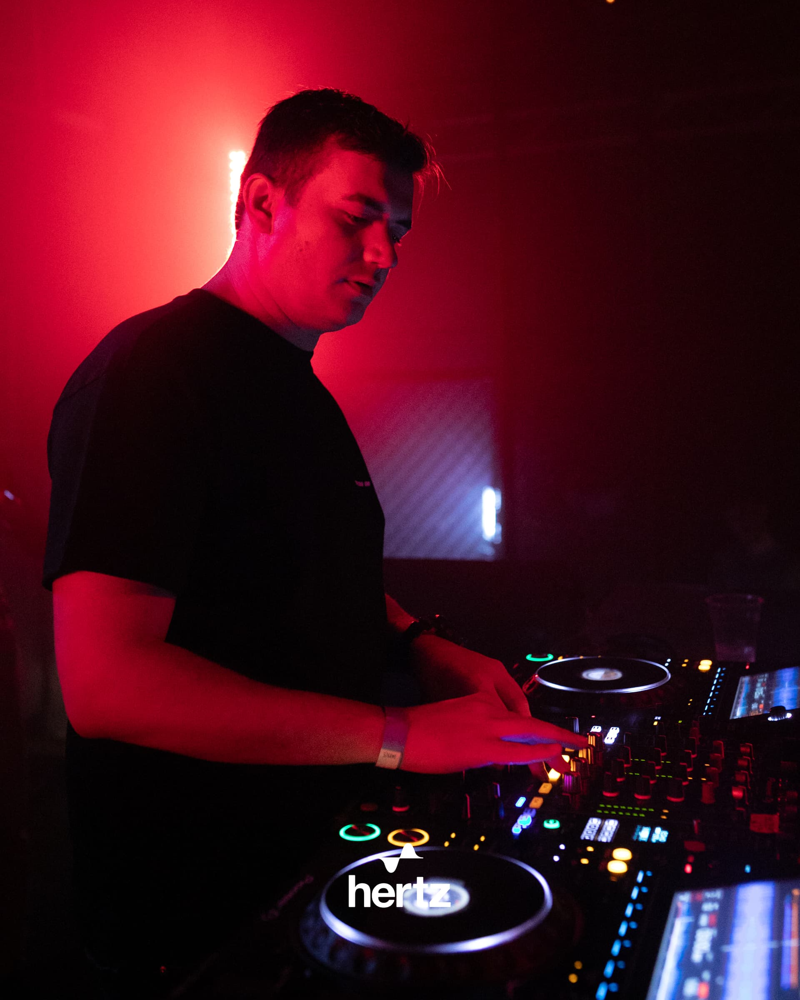
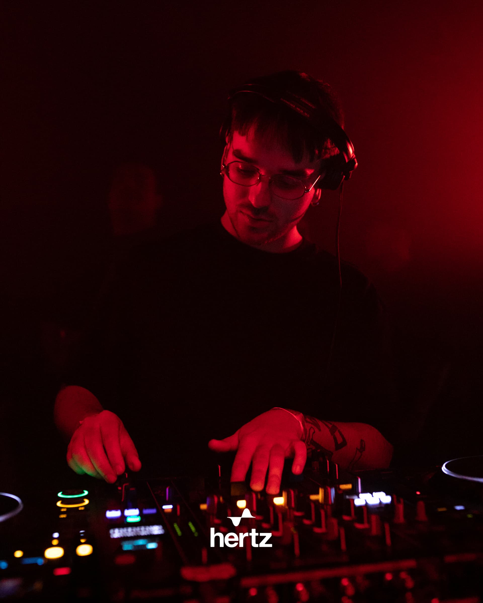
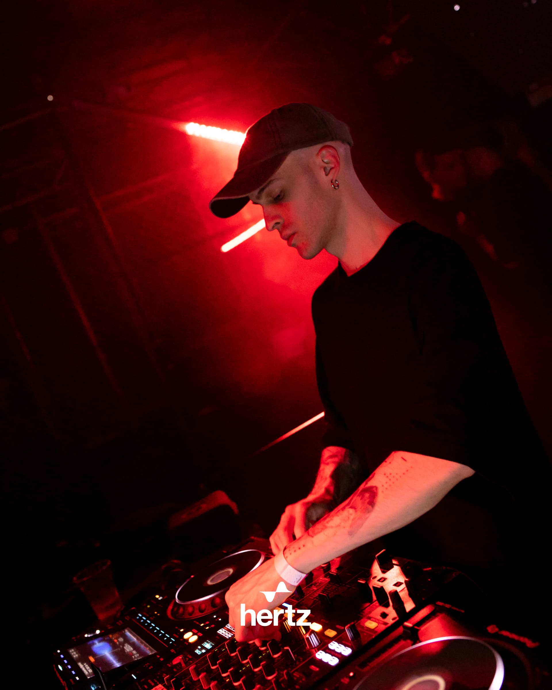
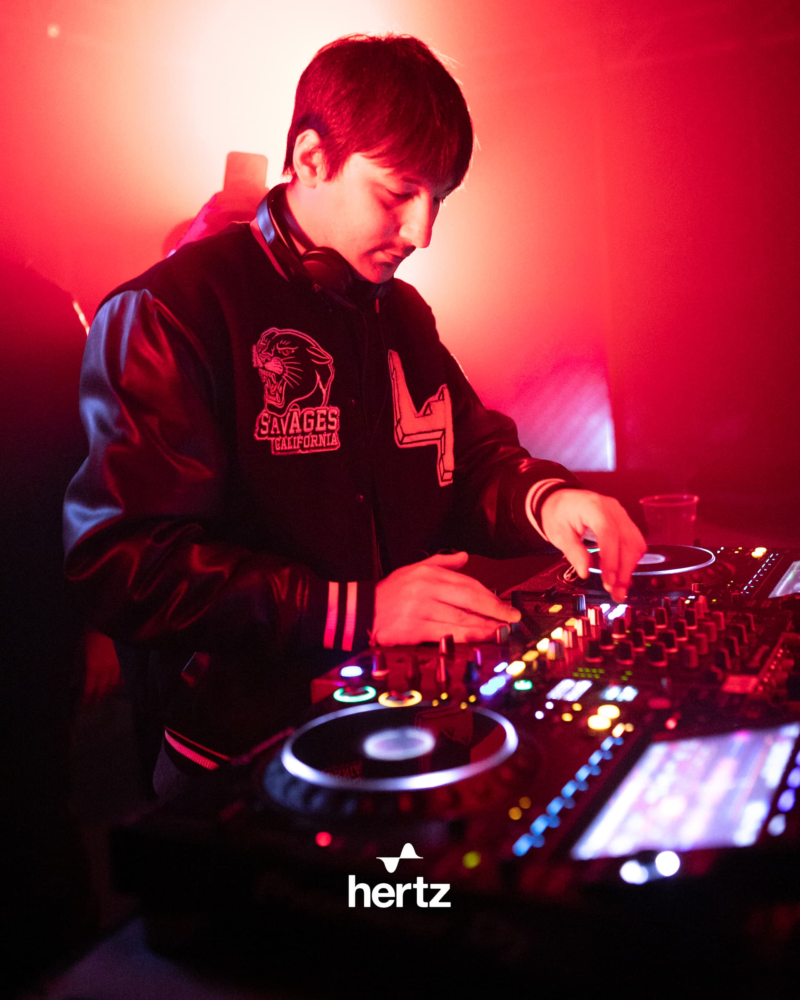
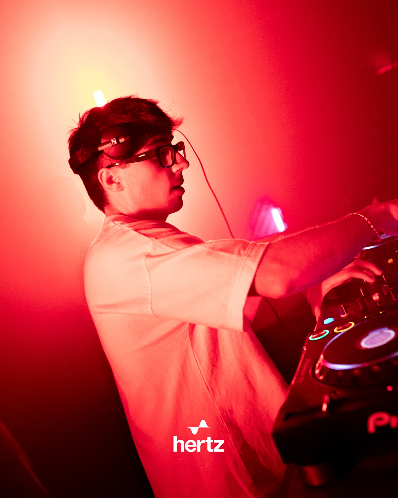

A weekly archive of residents and guests — recorded sets, no edits, the room as it sounded. New transmission every week.

▶ Hertz Podcast #012 LATESTFederico Apadula · Deep · Minimal · Atmospheric 011
▶ Hertz Podcast #011Tommaso Mancò · Tech · Driving · Raw 010
▶ Hertz Podcast #010Alberto B · Deep Tech · Groove 009
▶ Hertz Podcast #009Matteo Fava · Minimal · Hypnotic 008
▶ Hertz Podcast #008Leonardo Giusti · Deep · Melodic 007▶ Hertz Podcast #007Federico Apadula · Deep · Minimal · Atmospheric